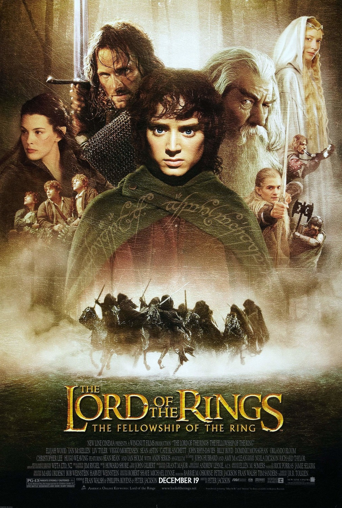

Top 4 Melhores Filmes
SuperBad
Os estudantes adolescentes Seth e Evan têm grandes esperanças para uma festa de formatura.
Os adolescentes co-dependentes pretendem beber e conquistar garotas para que eles possam se tornar parte da multidão popular da escola, mas a ansiedade de separação e dois policiais entediados complicam a auto-missão proclamada dos amigos.
Data de lançamento: 19 de outubro de 2007 (Brasil)
Diretor: Greg Mottola
Música: Lyle Workman
Orçamento: US$ 20 milhões
Companhia(s) produtora(s): Columbia Pictures; The Apatow Company
Idioma: inglês
Vingadores Ultimato

Após Thanos eliminar metade das criaturas vivas, os Vingadores têm de lidar com a perda de amigos e entes queridos. Com Tony Stark vagando perdido no espaço sem água e comida, Steve Rogers e Natasha Romanov lideram a resistência contra o titã louco.
Data de lançamento: 25 de abril de 2019 (Brasil)
Bilheteria: 2,798 bilhões USD
Orçamento: 356 milhões USD (2019)
Adaptação de: Vingadores
Música: Alan Silvestri
Prêmios: Critics' Choice Movie Award: Melhor Filme de Ação, MAIS
Interestelar
As reservas naturais da Terra estão chegando ao fim e um grupo de astronautas recebe a missão de verificar possíveis planetas para receberem a população mundial, possibilitando a continuação da espécie. Cooper é chamado para liderar o grupo e aceita a missão sabendo que pode nunca mais ver os filhos. Ao lado de Brand, Jenkins e Doyle, ele seguirá em busca de um novo lar.
Data de lançamento: 6 de novembro de 2014 (Brasil)
Diretor: Christopher Nolan
Roteiro: Jonathan Nolan; Christopher Nolan
Companhia(s) produtora(s): Legendary Pictures; Syncopy Films; Lynda Obst Productions
Orçamento: US$ 165 milhões
Prêmios: Oscar de Melhores Efeitos Visuais
O Senhor dos Anéis

The Lord of the Rings: The Fellowship of the Ring é um filme de fantasia dirigido por Peter Jackson e baseado no primeiro volume da série O Senhor dos Anéis, de J. R. R. Tolkien. O filme narra a procura do Senhor do Escuro Sauron pelo Um Anel. O anel que atualmente está em posse do hobbit Frodo Bolseiro.
Data de lançamento: 1 de janeiro de 2002 (Brasil)
Diretor: Peter Jackson
Continuação: O Senhor dos Anéis: As Duas Torres
Música: Howard Shore
Prêmios: Oscar de Melhores Efeitos Visuais, MAIS
Adaptação de: O Senhor dos Anéis, A Sociedade do Anel